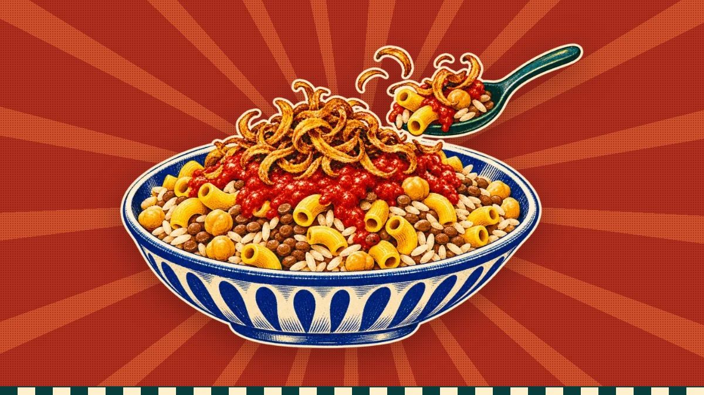
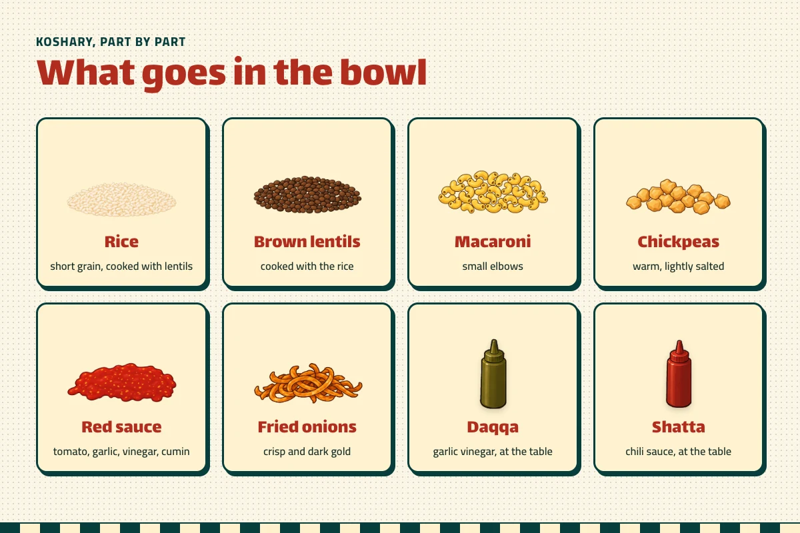
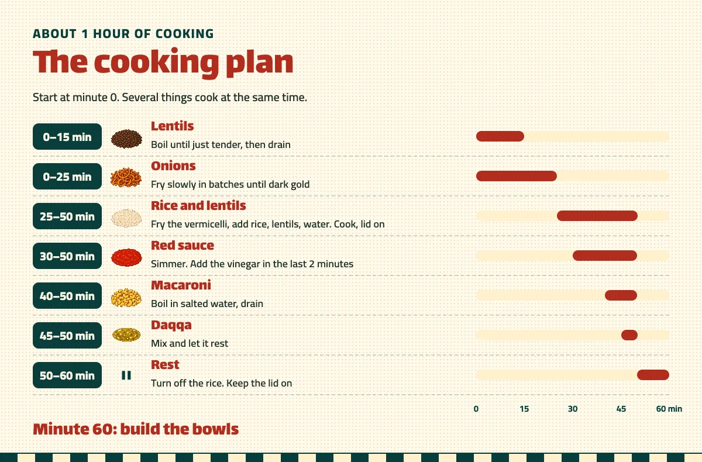
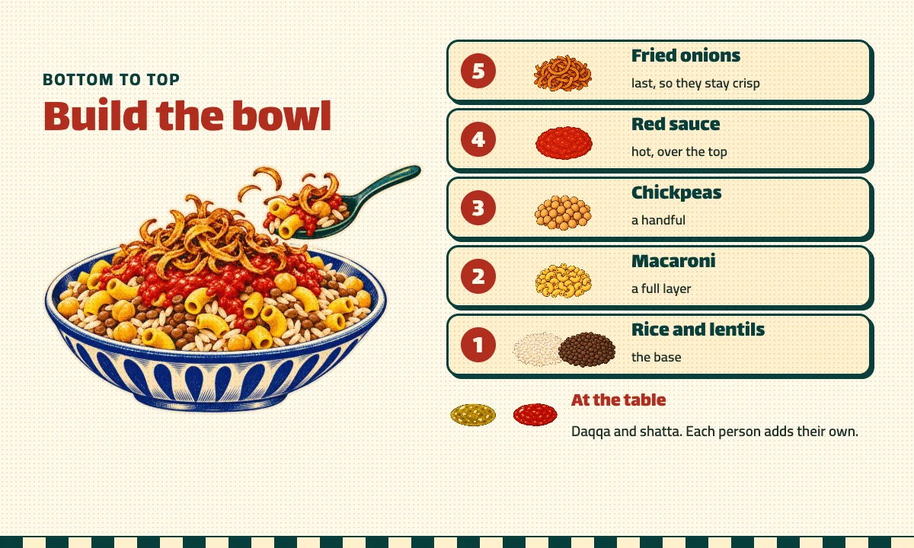

Recipe · from the game Baba Abdo · Jump to recipe · اقرأ بالعربية
Egyptian koshary recipe, like the Cairo shops
Koshary (also spelled koshari) is the street food of Cairo: rice, lentils and pasta under a hot tomato sauce and a pile of crispy onions. This is the home version of the bowl from my game, Baba Abdo, with a plan that fits in one hour.

I grew up on koshary from the shops in Cairo. When I made Baba Abdo, a cooking game about a small koshary shop, I had to draw every layer of the bowl. This post turns those layers back into food.
Koshary has many parts, but each part is easy. The trick is the order: start the slow parts first, and let several pots cook at the same time.
At a glance
- Yield: serves 6 (prep 15 min, cook 1 hour)
- Diet: vegan when you fry in vegetable oil (use cornstarch or plain onions plus gluten-free pasta for gluten free)
- Pots needed: 1 heavy pot for lentils then rice, 1 deep pan for onions then red sauce, 1 pot for pasta, 1 small pot for chickpeas
Ingredients (serves 6)

Fried onions
- 3 large onions (about 600 g), thinly sliced
- 1 tbsp flour or cornstarch (optional, for extra crunch)
- 1 cup (240 ml) sunflower or other neutral oil
Rice and lentils
- 1 cup (200 g) brown lentils
- 2 cups (400 g) short-grain or Egyptian rice, rinsed
- 1/2 cup (50 g) broken vermicelli (optional)
- 3 tbsp of the onion frying oil
- 1 tsp ground cumin
- 1 1/2 tsp salt
- 3 cups (720 ml) hot water (start with the reserved lentil water and top up; use 2 1/2 cups if you skip the vermicelli)
Macaroni and chickpeas
- 250 g small elbow macaroni
- 1 tbsp of the onion frying oil
- 1 can (400 g) chickpeas, drained, plus a pinch of salt
Red sauce
- 2 tbsp of the onion frying oil
- 6 garlic cloves, minced
- 1 tsp ground cumin
- 1 tsp ground coriander
- 1/2 tsp chili flakes or cayenne
- 2 tbsp tomato paste
- 400 g crushed tomatoes (or 5 ripe tomatoes, grated)
- 1 cup (240 ml) water
- 1 tsp salt and a pinch of sugar
- 3 tbsp white vinegar
Daqqa (garlic vinegar)
- 6 garlic cloves, crushed
- 1/2 cup (120 ml) white vinegar
- 1/2 cup (120 ml) water
- 1 tsp ground cumin
- 1/2 tsp salt
- Juice of 1/2 lemon (optional)
Shatta (chili sauce)
- 1/4 cup of the red sauce
- 1 to 2 tsp chili flakes or cayenne
- 2 tbsp daqqa
- 1 tbsp of the onion frying oil
The one-hour plan
Start the clock when the lentils go on the stove. Several pots cook at the same time, so read each row as "start at this minute, stop at that minute".

Step by step
- Parboil the lentils (minute 0 to 10). Rinse the lentils. Cover them with 4 cups of water, bring to a boil and simmer for 10 minutes, until they start to soften but stay firm in the center. Drain them over a bowl and keep the dark lentil cooking water.
- Fry the onions (minute 0 to 25). While the lentils cook, toss the sliced onions with the flour or cornstarch (if using). Heat the oil over medium heat. Fry the onions in 2 batches and stir often, for 10 to 12 minutes per batch, until dark gold. Lift them onto paper towels so they crisp as they cool. Pour the onion oil into a heatproof bowl and reuse the pan for the red sauce.
- Cook the rice and lentils (minute 25 to 50). In the lentil pot, heat 3 tbsp of the onion oil. Fry the vermicelli for about 2 minutes until golden, then stir in the rice for 1 minute. Add the drained lentils, cumin, salt and 3 cups of hot liquid (start with the reserved lentil water and top up with hot water; use 2 1/2 cups if you skip the vermicelli). Bring to a boil, put the lid on and cook on low heat for 20 minutes.
- Make the red sauce (minute 30 to 50). Heat 2 tbsp of the onion oil in the onion pan. Cook the garlic for 30 seconds without letting it brown. Stir in the cumin, coriander, chili and tomato paste for 1 minute. Add the tomatoes, water, salt and sugar. Simmer for 15 to 20 minutes until the sauce coats a spoon. Stir in the vinegar in the last 2 minutes.
- Boil the macaroni and warm the chickpeas (minute 40 to 50). Cook the macaroni in well-salted water for 1 minute less than the packet says. Drain it and toss with 1 tbsp of the onion oil so it does not stick. Warm the chickpeas in a small pot with a splash of water and a pinch of salt.
- Rest the rice (minute 50 to 60). Turn off the heat under the rice and keep the lid closed for 10 minutes. Then fluff it with a fork.
- Mix the daqqa and shatta (minute 50 to 55). While the rice rests and the red sauce is ready, stir the garlic, vinegar, water, cumin, salt and lemon juice together for the daqqa. Let it sit a few minutes so the garlic softens. For the shatta, mix 1/4 cup of the finished red sauce with the chili, daqqa and 1 tbsp of the onion oil in a small bowl.
Build the bowl

- Rice and lentils fill the bottom half of the bowl.
- Macaroni goes on top in a full layer.
- Chickpeas: a handful.
- Red sauce: a ladle, hot.
- Fried onions: a big pinch, last.
Put the daqqa and shatta on the table. In the shops, each person adds their own, and many people mix the whole bowl before the first bite.
Make it taste like the shops
- Use the onion oil everywhere. The rice, the sauce, the macaroni and the shatta all get a spoon of the oil you fried the onions in. This is most of the flavor.
- Vinegar and cumin, twice. They go in the red sauce and in the daqqa. That sour, warm taste is what makes it koshary.
- Slice the onions thin and even. Fry them in batches over medium heat so the oil stays steady. Take them out a little early because they keep cooking on the towel.
- Serve the sauce hot. Hot sauce on warm rice is the shop experience. Warm the sauce again just before you build the bowls.
- Let people season their own bowl. The red sauce is mild. All the heat comes from the shatta.
One-pot koshary
If you want fewer pots, fry the vermicelli in 3 tbsp of the onion oil in a wide pot, then stir in the rinsed rice and the parboiled lentils. Scatter the dry macaroni on top without stirring, pour in 4 cups of hot liquid (the lentil water topped up with hot water) with the cumin and salt so it barely covers the pasta, bring to a boil, and cook covered on low heat for 18 to 20 minutes until tender. Keep the onions and the red sauce separate.
Make ahead and store
- Keep each part in its own box in the fridge for up to 3 days.
- Keep the fried onions in a dry, closed jar at room temperature, not in the fridge, so they stay crisp.
- Warm the rice and macaroni with a splash of water. Warm the sauce in a small pan.
The bowl in the game
In Baba Abdo, six trays sit above the bowl: rice, macaroni, lentils, chickpeas, tomato sauce and fried onions. Daqqa and shatta come in bottles. Each neighbor has a usual order. Hassan always skips the onions, the daqqa and the chili, and a bowl with the wrong layers costs you the tip.
In the game the lentils have their own tray, so you can see every layer. At home, cook them with the rice, like most shops do.

Questions
Is koshary vegan?
Yes, when you fry the onions in vegetable oil. Every part of koshary is plant based: rice, lentils, pasta, chickpeas, tomatoes, onions, garlic and vinegar.
Is koshary gluten free?
No. The macaroni, the vermicelli and the optional flour on the onions all contain wheat. For a gluten-free bowl, use gluten-free pasta, leave out the vermicelli, and coat the onions in cornstarch or fry them plain.
Is koshary spicy?
Only if you want it to be. The red sauce in this recipe is mild. The heat comes from the shatta, which each person adds at the table.
What is daqqa?
Daqqa is a thin garlic and vinegar sauce with cumin. You pour it over the bowl at the table. It makes the rich rice and pasta taste fresh.
Where does koshary come from?
Koshary is Egyptian street food. Its rice and lentil base is often linked to Indian khichri, a rice and lentil dish. Egypt added the pasta, the chickpeas, the tomato sauce and the crispy onions.
Is koshary healthy?
Lentils and chickpeas give plant protein and fiber. But koshary is a big bowl of carbs, and the onions are fried. For a lighter bowl, use more lentils, less pasta and fewer onions.
Can I use canned lentils?
It is better to use dry lentils, because you parboil them and cook the rice in their dark lentil water for color and flavor. If you use canned lentils, rinse them and fold them into the cooked rice.